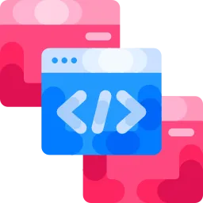
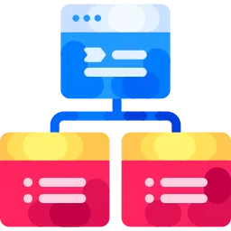
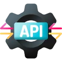
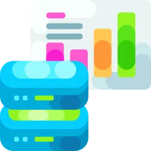
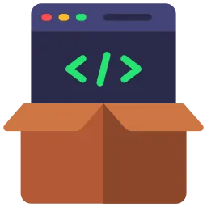
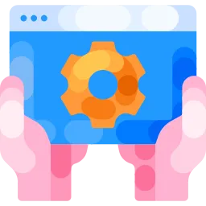
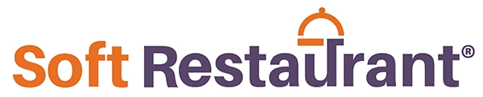
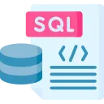

Integraciones APISoftware de CeroDesarrollo Web y PortalesConexión SoftRestaurant, Rappi, etc.
Diagnóstico previoIntegración con CONTPAQiProyecto escalableAcompañamiento postventa
¿Por qué un Desarrollo a la Medida?
Es un traje a tu medida. Adaptamos el software a tus procesos, no tus procesos al software. Integramos CONTPAQi con tus otras plataformas y construimos exactamente lo que tu empresa necesita.

ADAPTA EL SOFTWARE A TI
Deja de forzar tus procesos a un sistema genérico. Creamos funciones a tu manera.
OPTIMIZA PROCESOS CRÍTICOS
Automatiza tareas manuales, reduce errores y libera tiempo de tu equipo.

INTEGRACIÓN TOTAL
Conecta tus “islas” de software: punto de venta, eCommerce, delivery, CONTPAQi y más.
INVERSIÓN EFICIENTE
Paga solo por lo que realmente usas. Sin módulos gigantes que nunca ocuparás.
ESCALABILIDAD Y FLEXIBILIDAD
Tu software crece contigo. Agregamos funciones conforme tu negocio evoluciona.
ACOMPAÑAMIENTO CONSTANTE
Desarrollo, mantenimiento y soporte con el mismo equipo que creó tu solución.
Elige la categoría. Podemos integrar CONTPAQi, crear módulos a la medida o construir portales web conectados a tu operación.

Conexión de Terceros
Integramos CONTPAQi con la plataforma que uses (si tu plataforma lo permite): eCommerce, delivery, SoftRestaurant y más vía API.
Definimos alcance por endpoints y casos de uso.
Sin capturas dobles: datos consistentes.
Bitácora y validaciones para auditoría.

Automatización de Flujos
Flujos automáticos entre tus sistemas: altas, sincronizaciones y tareas programadas con reglas claras.
Procesos idempotentes (sin duplicados).
Alertas y reintentos controlados.
Registro de errores y trazabilidad.
Sincronización CONTPAQi
Conectamos tus desarrollos con Contabilidad, Comercial, Nóminas y más, según tu versión y arquitectura.
Mapeo de catálogos y llaves.
Pruebas por escenario real.
Documentación técnica de integración.

Software desde Cero
Creamos herramientas específicas para tus procesos: captura, control, autorización y reporting.
Diseño por flujo (UI/UX primero).
Roles, permisos y bitácora.
Entregables por etapas.
Reportes Especializados
Reportes y vistas que CONTPAQi no incluye por defecto, hechos a tu operación (KPIs, tableros, exportables).
Filtros útiles, no “ruido”.
Exportación limpia (Excel/PDF).
Compatibilidad con tus catálogos.

Módulos Adicionales
Agregamos funciones específicas a tus sistemas actuales para ahorrar tiempo y reducir errores humanos.
Validaciones y reglas de negocio.
Automatización de tareas repetitivas.
Soporte y mantenimiento opcional.
Portales Web para Clientes
Portales de consulta y autoservicio conectados a tu información: saldos, facturas, pedidos, estatus.
Accesos por cliente/rol.
Historial y descargas.
Diseño responsive real.
Apps Web Internas
Herramientas web para tu equipo: captura en campo, autorizaciones, seguimiento y control interno.
Menos fricción operativa.
Permisos por área.
Bitácora para auditoría.
Optimización de Tareas
Digitalizamos tareas manuales con flujos claros: menos retrabajo, menos errores, más velocidad.
Mapeo de proceso actual.
Propuesta de mejora.
Implementación y adopción.
Plataformas que Integramos
Ecosistema CONTPAQi
Nuestra base. Conectamos Contabilidad, Comercial, Nóminas y más.

SoftRestaurant
Sincronizamos ventas, comandas, inventarios y pólizas contables.
Apps de Delivery
Integramos pedidos de Rappi, UberEats y Didi a tu sistema CONTPAQi.
eCommerce
Conectamos tu tienda en Shopify o WooCommerce con Comercial.
Cualquier API
Si tu sistema tiene una API, podemos conectarlo.

Bases de Datos
Leemos y escribimos en SQL, MySQL, etc., para crear procesos y reportes.
Cotiza tu Proyecto
Su Proyecto es un traje a la medida
No hay precios fijos porque no hay dos proyectos iguales. Cuéntanos tu idea, tus sistemas actuales y qué quieres lograr. Te daremos una cotización detallada.
Lo principal es tener claro el problema que quieres resolver o el proceso que quieres optimizar. ¿Qué sistemas quieres conectar? ¿Qué tarea manual quieres automatizar? Con eso agendamos una sesión y definimos el alcance.
¿Trabajan solo con CONTPAQi?
CONTPAQi es nuestra base, pero podemos integrarlo con otros sistemas como SoftRestaurant, plataformas de delivery, eCommerce, ERPs o cualquier solución que cuente con API o acceso a base de datos.
¿Cuánto tarda un desarrollo a la medida?
Depende del tamaño del proyecto. Algunas integraciones sencillas pueden estar listas en pocas semanas; un portal completo o un sistema desde cero puede requerir más tiempo. En la propuesta incluimos tiempos estimados.
¿Dan soporte y mantenimiento a lo que desarrollan?
Sí. Todos nuestros desarrollos incluyen garantía inicial. Además, podemos ofrecerte planes de soporte y mantenimiento continuo para que tu solución se mantenga actualizada y funcionando al 100%.
¿Puedo empezar con algo pequeño e ir creciendo?
Claro. Muchos clientes inician con una integración o módulo específico y, conforme ven resultados, ampliamos el alcance. Diseñamos las soluciones pensando en la escalabilidad.
Hablemos de las posibilidades.
Tu negocio y tus sistemas integrados al 100% es la combinación ideal. Optimiza procesos, reduce costos y céntrate en el crecimiento de tu empresa.